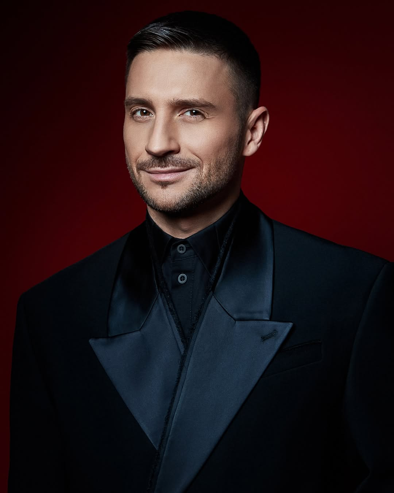
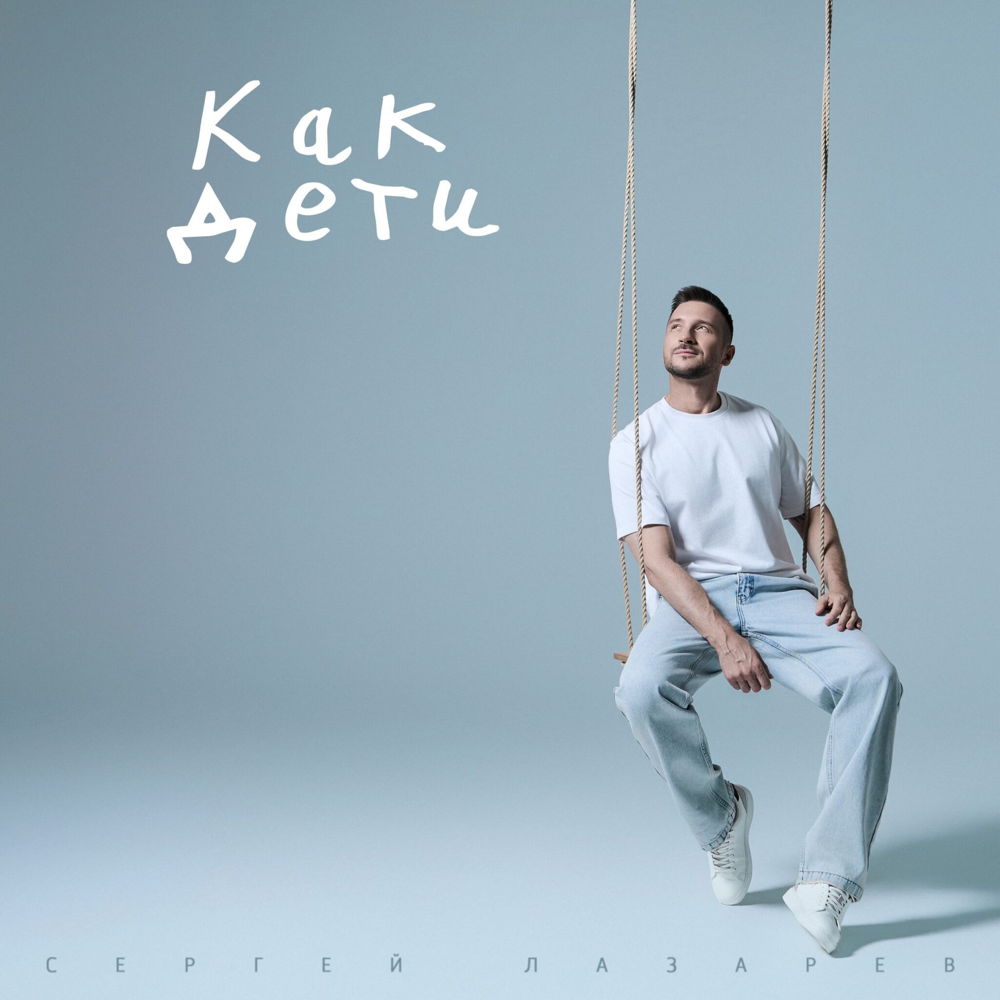
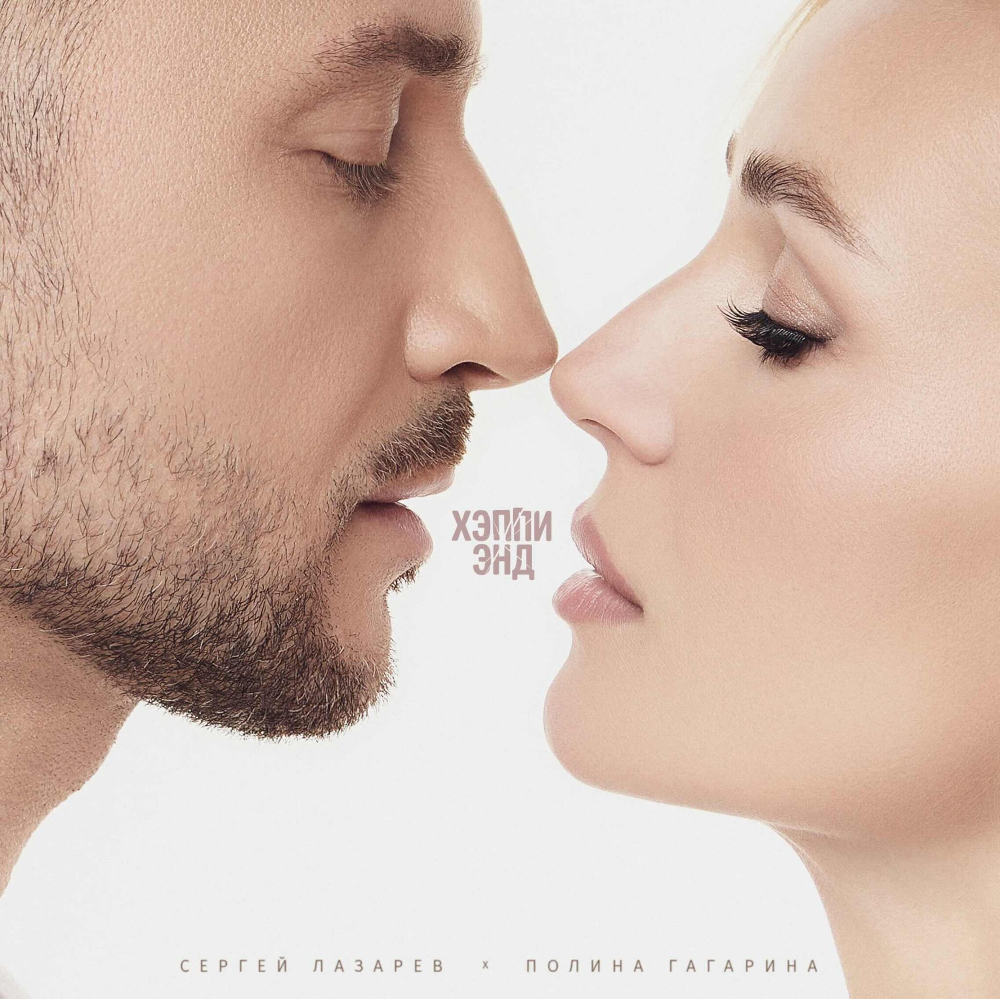
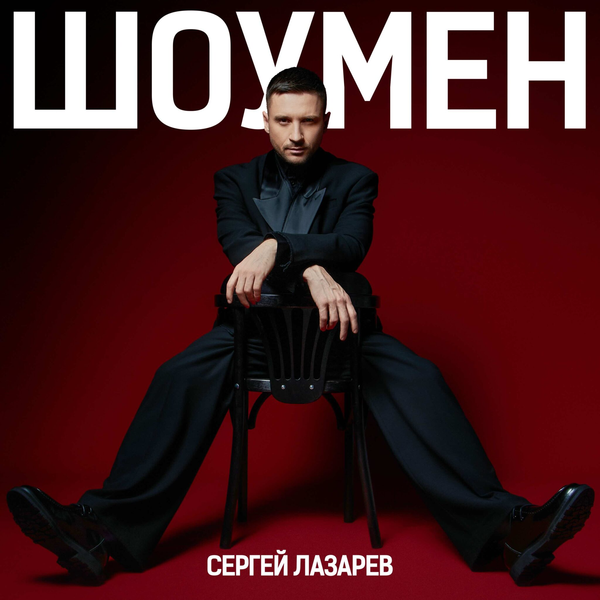
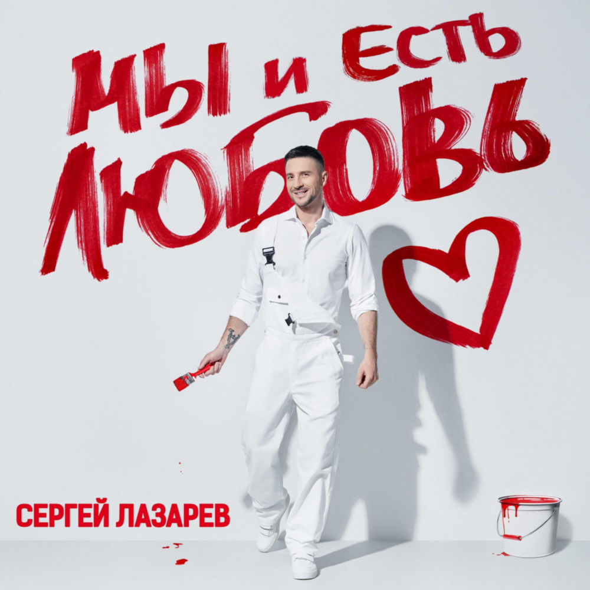
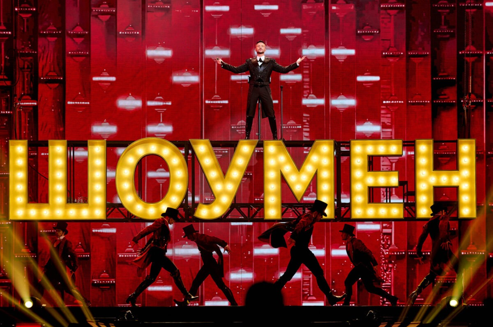

Сергей Вячеславович Лазарев
Российский певец, актёр театра, кино и озвучивания, телеведущий. Бывший участник поп—группы Smash!!
Обладатель множества музыкальных призов. Это многократные награды «Золотого граммофона», телеканалов «Муз-ТВ», Ru.TV и других.
Дважды выступал на международном конкурсе песни «Евровидение» (в 2016 году и в 2019 году), оба раза занял 3-е место.
Сергей Лазарев сейчас продолжает один из самых масштабных гастрольных проектов российской сцены — концертный тур «ШОУМЕН»

Последние релизы




Информация на момент ноября 2026 года
Лучший концертный тур
«ШОУМЕН» — это шоу мирового уровня, в котором сочетаются музыка, эмоции, технологии и энергия живого исполнения. Это история о силе артиста, который на протяжении более двух часов держит внимание многотысячного зала, доказывая, что настоящий шоумен это прежде всего искренность, талант и безграничная отдача своему зрителю. Тур уже охватил десятки городов России и ближнего зарубежья и продолжает расширять свою географию.

Найди свой город в туре!
Введи свой город и узнай, когда у Сергея Лазарева будет концерт поблизости!